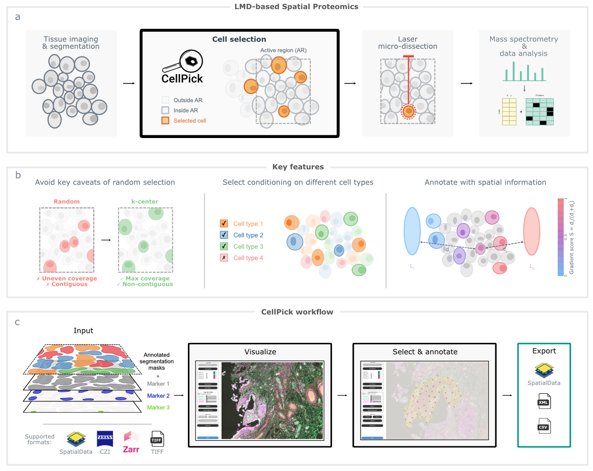
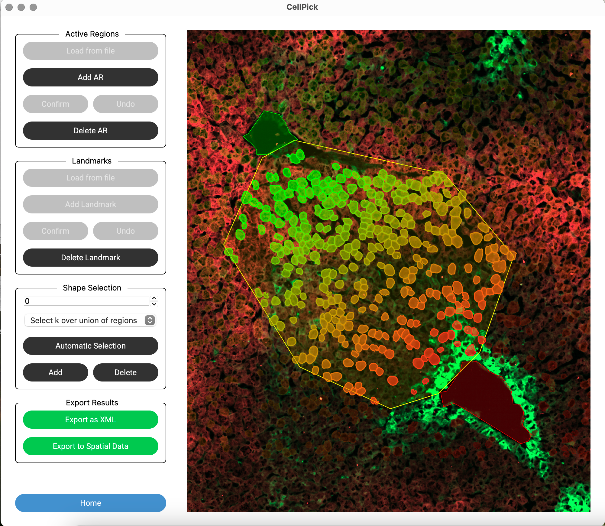

Strategic cell selection and positional annotation for spatial proteomics
Website · Documentation · Code
CellPick is a graphical tool for selecting cells in laser-capture microdissection workflows such as Deep Visual Proteomics. These experiments can measure thousands of proteins per cell, but only for a limited number of cells per tissue section. Picking a representative, non-contiguous subset of cells is therefore a central step: random selection can cluster cells in dense areas, miss sparse regions, and select neighboring cells that may be damaged during microdissection.
CellPick formulates this task as a combinatorial optimization problem and exposes it through an interactive interface that does not require programming. Users can load multichannel microscopy images, cell segmentation masks, and optional cell labels; define active regions; and select cells that are spread across the tissue while avoiding contiguous shapes whenever possible. The software supports standard image inputs such as TIFF, CZI, and Zarr, as well as native integration with SpatialData and the broader scverse ecosystem.

Figure 1. CellPick supports LMD-based spatial proteomics workflows by selecting non-contiguous, spatially representative cells, supporting category-constrained selections, annotating cells along user-defined spatial gradients, and exporting results for downstream analysis.
The core selection routine is based on a k-center-style strategy that aims to maximize spatial coverage within the selected region. When categorical labels are available, such as cell types, CellPick can also select a specified number of cells from each category while maintaining the same spatial constraints. This makes it useful for experiments where balanced sampling across biological classes matters.
CellPick also supports positional annotation. Users can draw landmarks, such as central and portal veins in liver tissue, and the software computes a spatial gradient score for each cell based on its relative distance to those landmarks. These annotations can then be exported for downstream analyses, for example to correlate protein intensities with position along a tissue axis, as in our single-cell spatial proteomics study of human liver zonation.

Outputs can be exported as XML for laser microdissection compatibility, CSV for downstream statistics, or SpatialData for integration into spatial omics pipelines. The software is available from the project website, with documentation and tutorials and source code on GitHub.